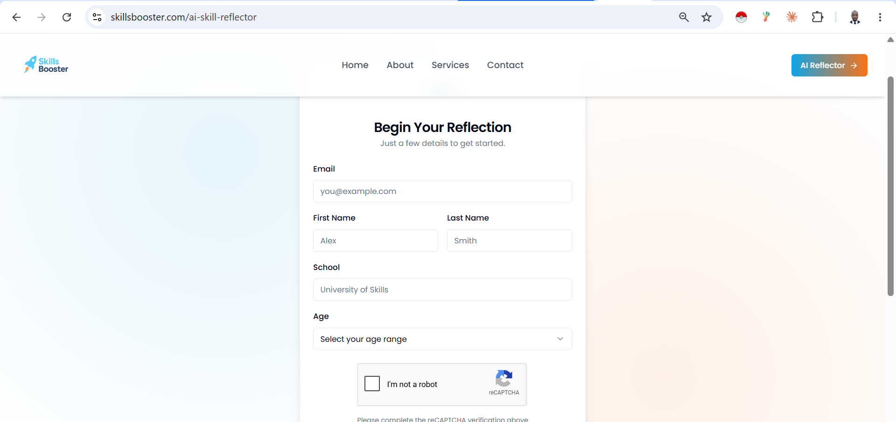
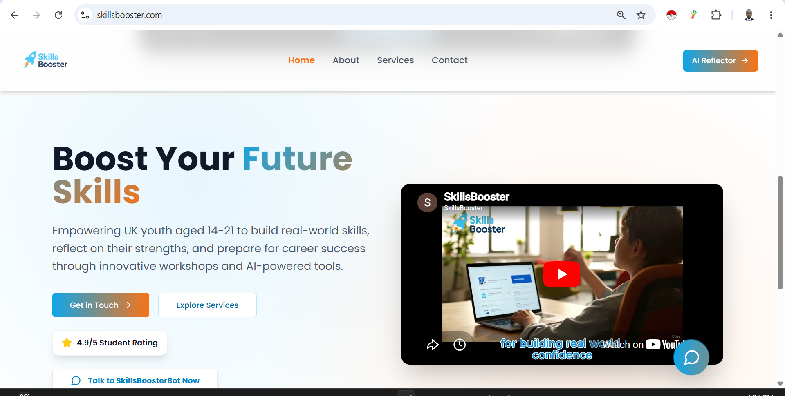
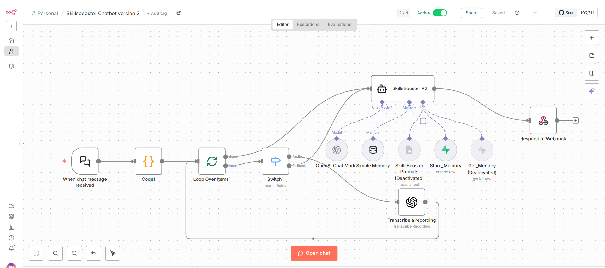
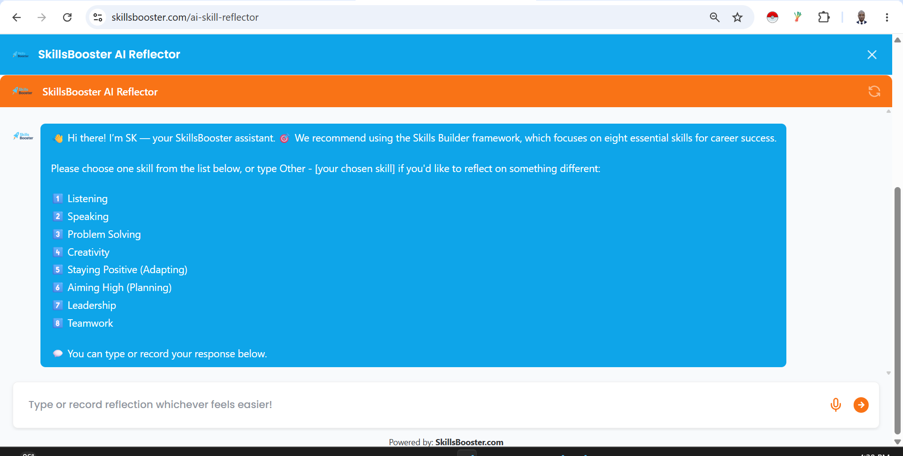
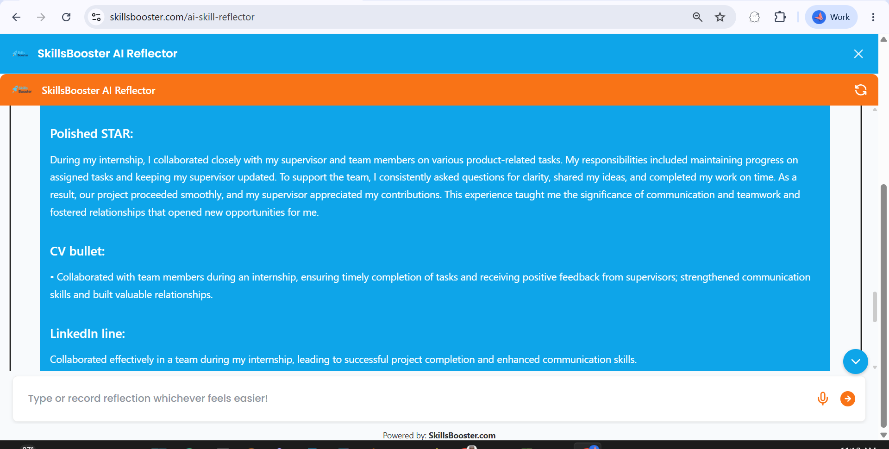

AI Skills Reflector
A voice-and-text AI coaching tool that helps students identify and explain their employability skills using the STAR method. Built for SkillsBooster, which is already a live product.


The problem
Students find it hard to recognise and put words to their transferable skills for CVs, interviews, and applications. Careers teams want to help but don't have a scalable way to guide that reflection one-to-one. The tool is designed to complement existing careers platforms, not replace them.
My role
I owned the concept, the build, and the supporting research and documentation. I worked through the design of the conversation flow, the input handling, and how results are stored and reused.
What I built
An n8n workflow that accepts typed or spoken input. Spoken answers are transcribed with OpenAI Whisper, then passed to an AI agent. The agent carries session memory, works from a structured skills framework, coaches the user through STAR, and returns a short paragraph plus a CV line and a LinkedIn line.
Simplified architecture
live workflowThe agent also connects to session memory and a database for saved reflections. Internal prompts and configuration are not shown.

The tool in action
The assistant opens with the Skills Builder framework, coaches the student, then returns polished, reusable output.


Main technologies
n8nOpenAI (language model)OpenAI WhisperSupabaseGoogle Sheets
Results
- A working tool that handles both text and voice input.
- Coaching that gives students CV- and interview-ready wording they can reuse.
- Saved reflections so a session can be picked up later.
Challenges and lessons
The hardest part was keeping the branching logic simple while supporting both text and voice. I tested in small steps rather than building the whole flow at once, which made problems easier to isolate. Because the tool is used by under-18 students, I kept data handling careful from the start. If I built it again, I would add clearer session summaries and tidy the input-routing earlier.
Evidence
Architecture rebuilt from the live workflow · demo and project documentation available on request